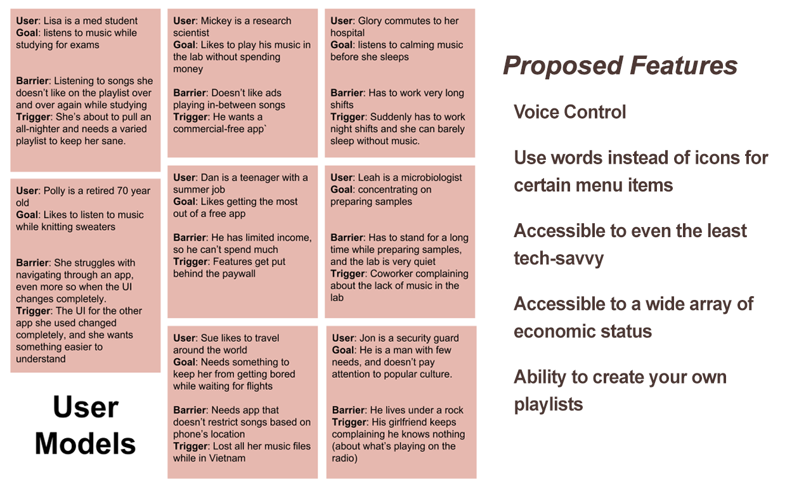
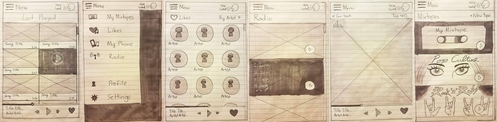
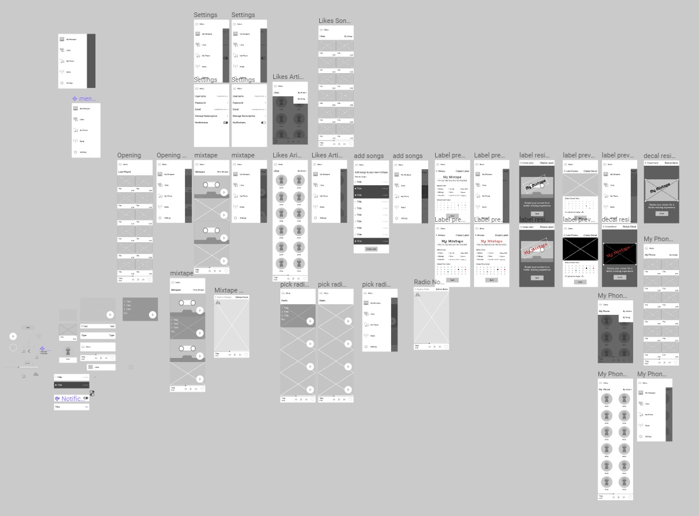
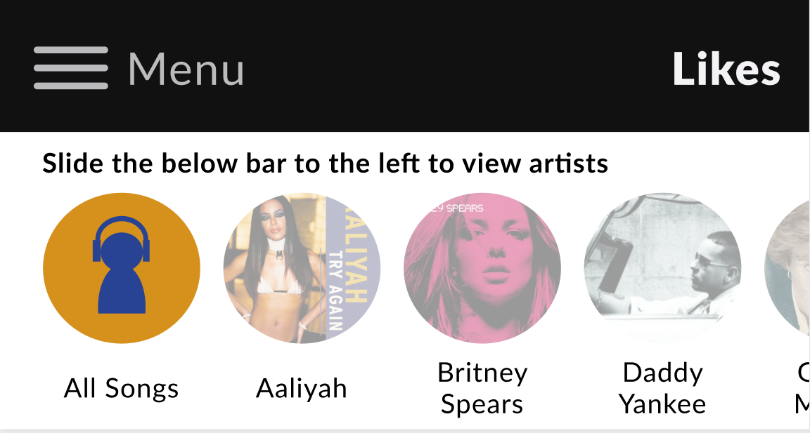
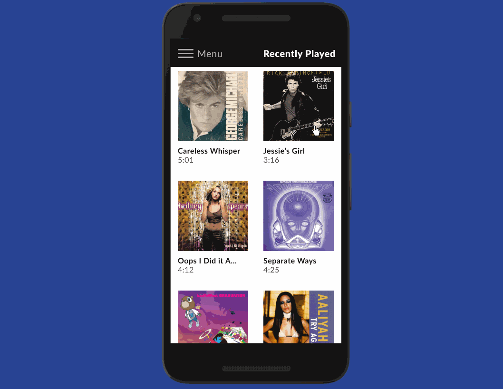

As part of a deceptively simple assignment, I had to design a music app.
To determine how this app would differentiate itself, I analyzed the features and designs found on competitors' music apps
Summary of competitors' designs:
The play/pause button is the biggest icon on the media playback control, and it is also centrally positioned.
Media playback controls will show how much time elapsed while the song is playing.
Music apps allow you to create your own playlist, which have large thumbnails.
Playlists have visual cues. For example, a 70's playlist would have a picture of several hippies on it.
Media playback control icons are mostly identical, indicating their universality. Deviating from recognizable icons may confuse users.
Competitive analysis allowed me to observe competitors' approaches to designing music apps. The next step was to brainstorm the pain points of various users. Instead of creating user personas, I created several user models to avoid becoming too attached to a user persona. Most were based off of people I knew in real-life.
The voice control aspect was eventually discarded to focus on other features.
Based on what I gleaned from the user models, I jotted down the features this app would have, as well as sketching them out:
Radio stations.
The ability to "like" songs played on the radio. Liked songs will appear in your app for later use.
Accessible to older audiences.
Play songs already stored in your phone.
Create and customize playlists, dubbed "mixtapes" in this app.
"Liked" songs are temporarily stored in the app's storage, and can disappear any time the app no long has rights to them.
Subscribed members can download songs from the radio onto their phone instead of "liking" them.
Some rough sketches of the the potential appConcept sketches of the design of the app.
From those sketches, I created the lo-fi mockup of the app on Figma.
Click on the image to view the lo-fi prototype on Figma
The User Testing
After completion of the prototype, my father volunteered to test it out. My father regularly asks me to be his IT support, and uses technology to browse Chinese websites. I asked him to perform three tasks:
Find the radio and select a station.
Results: He initially asked where the menu was, before finding it without my help. If I hadn't labelled the hamburger icon as "menu," he would've been stuck on this task. He was also confused by the title overlays that appear when he tapped on a given radio station.
Go to "My Phone," and order the songs by "song" instead of artist.
Results: He immediately figured out how to perform this task.
Go to your "Mixtape" and create a new mixtape with the font title as "Ribeye," the font color as red, and with the decal color as black.
Results: After asking me what "mixtape" and "decal" meant, I realized that cultural differences prevented him from understanding how to perform the task, even when I tried to explain those terms in broken Chinese--to put this in context, my dad move to the US after China came out of isolation, so he was not fluent in American pop culture. Additionally, he had trouble figuring out where to create a new mixtape, and could barely see the touch area for the font colors.
Several days after the the user testing, my dad advised me to create success/error messages in the app after completion of certain tasks.
The Hi-fi Prototype
I proceeded to make the hi-fi prototype, with the user testing results in mind. Along the way there were a couple major changes made:
Instead of showing separate screens whenever the songs are sorted by "artist" or "song," I opted to merge those screens by adding a horizontal scroll menu for the artists. After my mom commented that she had no idea how the horizontal scroll menu worked, I added a short line to clarify how to use it. Sometimes I have to spell things out
Because my father had trouble customizing a mixtape, I simplified the process by having the mixtape customization done on one screen. Originally, there was a series of screens for the customization.
You can view the prototype in the image below:
Click on the image to view the hi-fi prototype on Figma
Conclusion
While I am proud of how the music player design turned out so far, it is still a work in progress.
Through this project I got a glimpse of the UX research process, and thank goodness I did. Had I not tested the design with my father, many design choices I thought were accessible turned out to be unintuitive for someone like him. The importance of feedback cannot be overstated.